5.6 Data-Driven Background Estimation
The principal background of this analysis is composed of events with several jets coming from multiple quarks and gluon production from QCD processes. While simulated observations of multi-jet QCD processes can be generated, and were in fact readily available at the time this analysis was carried out, they are in practice not useful to realistically model the background contribution for the purposes of this work. Large datasets modelling inclusive QCD multi-jet production were produced in the CMS simulation campaign, divided in various consecutive range of total generator level scalar transverse momenta sum \(H_T^{\textrm{gen}}\). Leaving aside issues regarding the accuracy of the modelling of high jet multiplicity event provided by current leading order plus parton shower generators, the main obstacle for using the simulated samples is that their equivalent luminosity in the \(H_T^{\textrm{gen}}\) relevant for this analysis is several orders of magnitude smaller than the actual luminosity.
As a rule of thumb, to accurately model a mixture component using simulated samples, the number of simulated events has to be at least 10 times more than the number of expected events, or the modelling uncertainty due to the limited simulation statistics will greatly degrade subsequent inference. This problem is made worse when a significant fraction of the simulated dataset has to be used for training a probabilistic classifier and thus cannot be used for computing any expected value, because they might lead to biased estimations. A naive solution could be to simulate more events, but given the large cross section of low energy QCD processes, the total number of QCD inclusive simulated events required would be well over 1 billion which is too a large number given the total simulation budget available for the CMS experiment.
Another option, which was initially explored for modelling the QCD background in this analysis, was to only simulate events that pass a selection at parton level, e.g. with two or more high energy b-quarks. This could provide a radical reduction on the total computing time needed for simulation, especially if combined with the approximate simulation techniques described in Section 2.3.2, because the associated cross section can be greatly reduced. However, such generator level filtering is difficult to implement in a way that relevant events are not omitted after the event selection. Because of that, the desired level of modelling accuracy could not be achieved with this method.
The previously mentioned reasons motivate the direct used of real data to estimate the background contribution, as discussed in Section 3.1.4.2. Data-driven background estimation can be notoriously difficult and often several assumptions about the properties of the background have to be made. For example, the corresponding search by the ATLAS collaboration [168], models the background contribution with an independent data sample characterised by the same trigger and selection but for the looser requirement of only two b-tagged reconstructed jets. These events are then re-weighted using a factor that accounts for the probability that QCD processes produce two additional b-tagged jets, where the mentioned weight is also obtained from a data side band where not significant signal is expected. While that approach is proven effective when using the reconstructed \(M_\textrm{H}\) distribution for inference, it cannot be easily extended to a situation where all the multi-dimensional features of the data require to be precisely modelled, as is the case when the output of a probabilistic classifier is used as the summary statistic.
In the analysis presented here a different path was followed, based on developing a new data-driven background estimation method based on the concept of hemisphere mixing and some assumptions of the phase space characteristics of QCD multi-jet processes [147]. The technique, which is described in Section 5.6.1, directly attempts to create an artificial dataset using the the whole original dataset as input, hence can be used both for training the probabilistic classifier and to model the distribution of the final summary statistic used for inference. Because some aspects of the method are ad-hoc and cannot be formally demonstrated, it has been calibrated and then validated using a signal-depleted control region, a procedure that is discussed in Section 5.7.
5.6.1 Hemisphere Mixing
The basis of the data-driven background estimation method here proposed is to divide each event in two parts, referred to as hemispheres, so each can be substituted by an hemisphere from a different event in order to produce an artificial dataset. A graphical illustration of the hemisphere mixing technique used in this work is provided in Figure 5.6. The transverse thrust axis, defined as the axis in the \(x-y\) plane for which the absolute value sum of the projections of the transverse momenta of the selected subset of reconstructed jets is maximal, is used as a reference to divide each original event in two halves perpendicularly to the mentioned axis. This procedure is carried out for all the collected events that pass the selection described in Section 5.5, creating a dataset (or library) of hemispheres with as many rows as twice as many rows as the number of original events. Each half, or hemisphere, can be basically reduced to a set of reconstructed jets with their directions relative to the thrust axis. Once the hemisphere library has been created, each hemisphere in the original event can be substituted by a similar one by from a different event, once an appropriate distance metric has been defined. The procedure results in an artificial dataset that can be used to model the background component.
![Figure 5.6: Schematic depiction of the hemisphere mixing background estimation procedure. The red arrows represent b-tagged jets and the blue arrows represent jets that were not b-tagged in an event. The first step includes finding the thrust axis in the x-y plane. The event is then divided in two hemispheres, each composed of a set of jets, by the plane perpendicular to the thrust axis. All these hemispheres are used to create a dataset (or library) of hemispheres. For each original event, a artificial event can be created by substituting each original hemisphere with its closest neighbours, once a distance metric for hemispheres has been defined. Figure adapted from [148].](gfx/105_chapter_5/hemisphere_mixing.svg)
Figure 5.6: Schematic depiction of the hemisphere mixing background estimation procedure. The red arrows represent b-tagged jets and the blue arrows represent jets that were not b-tagged in an event. The first step includes finding the thrust axis in the \(x-y\) plane. The event is then divided in two hemispheres, each composed of a set of jets, by the plane perpendicular to the thrust axis. All these hemispheres are used to create a dataset (or library) of hemispheres. For each original event, a artificial event can be created by substituting each original hemisphere with its closest neighbours, once a distance metric for hemispheres has been defined. Figure adapted from [148].
The matching between the original and the replacement hemisphere is done by finding the pair minimising a inter-hemisphere distance. The mentioned distance is a function of the set of reconstructed jets contained within each hemisphere, and it is a combination of discrete and continuous variables. The discrete requirement for matching original hemispheres with those in the library is that they have the same number of jets \(N_j^h\) and b-tagged jets \(N_b^h\), which ensures a similar jet multiplicity distributions for the artificial data. The previous condition also avoids creating artificial events that do not pass the event selection, e.g. by combining an hemisphere with 2 b-tagged jets with another one including only one b-tagged jet, which would result in the artificial events having less that four b-tagged jets. For infrequent jet and b-jet multiplicity categories, the discrete condition is relaxed by considering a unique category. This is for example the case when four jets or b-jets are present in the hemisphere. In addition to the mentioned categorisation, the following continuous distance metric between the original hemisphere \(\boldsymbol{h}_o\) and each hemisphere from the library \(\boldsymbol{h}_q\) is defined as a measure of similarity: \[ \begin{aligned} d(\boldsymbol{h}_o,\boldsymbol{h}_q)^2 = \frac{ \left ( M_\textrm{t}(\boldsymbol{h}_o) - M_\textrm{t}(\boldsymbol{h}_q) \right )^2}{ \textrm{Var}(M_\textrm{t})} + \frac{ \left ( T(\boldsymbol{h}_o) - T(\boldsymbol{h}_q) \right )^2}{ \textrm{Var}(T)} \\ + \frac{ \left ( T_a(\boldsymbol{h}_o) - T_a(\boldsymbol{h}_q) \right )^2}{ \textrm{Var}(T_a)} + \frac{ \left ( P_z(\boldsymbol{h}_o) - P_z(\boldsymbol{h}_q) \right )^2}{ \textrm{Var}(P_z)} \end{aligned} \qquad(5.6)\] where \(M_\textrm{t}(\boldsymbol{h})\) is the invariant mass of the system composed of all the jets contained in the hemisphere, \(T(\boldsymbol{h})\) is the scalar sum of all the transverse momenta projection of all jets of an hemisphere to the thrust axis, \(T_a(\boldsymbol{h})\) is the scalar sum of the transverse momenta projections over a axis orthogonal to the thrust axis, and \(P_z(\boldsymbol{h})\) is the absolute value of the projection of the vectorial sum of the jet momenta along the beam axis. The denominators in Equation 5.6 are the variances of each of the variables and discrete category, as estimated directly from the library of hemispheres. This normalisation factor is included in order to reduce the effect of the scale of the magnitude of each component to the distance metric.
The substitute for each original hemisphere is found by finding the \(k^\textrm{th}\) nearest-neighbour hemisphere in the library. The closest hemisphere (\(k=0\)), corresponding to zero distance, would be the very same original hemisphere which is present in the library. Rather, the hemisphere is substituted with its \(k^{\textrm{th}}\) nearest neighbour, only considering \(k\geq 1\). Assuming forward-backward symmetry in the \(z\) direction and \(\phi\) rotational symmetry, and given that the distance metric \(d(\boldsymbol{h}_o,\boldsymbol{h}_q)^2\) does not depend on the sign and absolute magnitude of those quantities, all the jets in the hemisphere can be rotated in \(\phi\) or their \(p_z\) sign to match the original hemisphere properties. It is possible to considering different \(k\) neighbours for each hemisphere, obtaining a different artificial dataset in each case. Each of this artificial datasets can be labelled by a tuple \((k_1, k_2)\), where \(k_1\) indicate the ordinal of the neighbour used as the substitute for the original hemisphere corresponding to a \(\Delta \phi >0\) with respect to the thrust vector rotated \(\pi/2\) clock-wise, and \(k_2\) corresponds to the ordinal of the neighbour substituting the other original hemisphere. Consequently, if up to \(k_\textrm{max}\) neighbours are considered for each hemispheres, a total of \(k_\textrm{max}^2\) artificial datasets, each of the same size of the original dataset, could be composed by considering all the permutations.
The rationale of the above technique rests on the fact that QCD multi-jet production at leading-order corresponds to a \(2 \rightarrow 2\) parton scattering process, which is then affected by higher order corrections such such as QCD radiation, pileup or multiple interactions. By breaking the event in two hemispheres using the transverse thrust, the aim is to separate the outcome of the processes associated with each of the two final state partons in the mentioned \(2 \rightarrow 2\) approximation. The hemisphere distance metric attempts to preserve the main properties of the event, while avoiding strong correlations between jets in the two hemispheres. The goal of the hemisphere mixing procedure is then to obtain an artificial dataset where the effect of the signal present in the original dataset are effectively removed. This has been tested by injecting up to 100 times the expected SM contribution of simulated HH production events to a dataset of simulated QCD multi-jet events [147]. The distributions of the various variables after hemisphere mixing are not affected by the presence of signal, and are compatible with the QCD multi-jet component, which is the majority component. The level of agreement for the variables used as input of the probabilistic classifier in a control region will be discussed in more detail in Section 5.6.2.
Figure 5.7: Comparison (\(\chi^2\) score) of the mixed and re-mixed data (see Section 5.6.2) as a function of the neighbour combination \((k_1, k_2)\). The test score has been calculated based on the binned distribution of the probabilistic classifier. The one-sided confidence bands for the test score are also included for guidance. Figure adapted from [148].
The hemisphere mixing technique is applied to the data events passing the selection described in Section 5.5. Artificial datasets up to \(k_\textrm{max}=10\) have been considered, given that good modelling was observed until very large values of \(k_\textrm{max}\). The test score of the compatibility between the mixed artificial data as a function of the combination label is included in Figure 5.7, modelling breaks only at high values, e.g. \(k=128\). All the neighbour combinations up to \(k_\textrm{max}=10\) are sub-divided in three sets used for training the probabilistic classifier (training), validating and optimised the classifier (validation) and to estimate the background distribution of the final summary statistic (application). The last dataset is referred to as application instead of test set because its purpose is not to obtain unbiased estimates of the classifier performance, but rather to extract unbiased estimates of the classifier output distribution of background events. All the artificial datasets are not independent, e.g. the \((1,1)\) and \((1,2)\) dataset use the same first hemisphere, thus some careful choices are required when splitting the mixed datasets. The dataset splitting considered in this analysis, using the \((k_1, k_2)\) notation described before, correspond to:
- training set: concatenation of \((1,1)\), \((1,2)\), \((2,1)\) and \((2,2)\) mixed datasets
- validation set: concatenation of \((3,4)\), \((5,6)\), \((7,8)\) and \((9,10)\) mixed datasets
- application set: concatenation of \((4,3)\), \((6,5)\), \((8,7)\) and \((10,9)\) mixed datasets
noting that the observation in the training set are not fully independent, but it is expected that reusing hemispheres in the training sample at most might degrade slightly the classifier performance, but does not bias in any way the inference results if an independent set is used. The next section is devoted to the validation of the background model in data control regions and the development of a methodology to correct for possible biases in the final summary statistic expectations. For completeness, a comparison of the distribution of relevant variables, that are used as input to the probabilistic classifier, between the QCD multi-jet simulations available and those estimated using hemisphere mixing, are shown in Figure 5.8. The overall agreement is good, as expected from the discussion at beginning of this section, the statistical uncertainties coming from the low \(H_T\) range simulated QCD dataset are large.
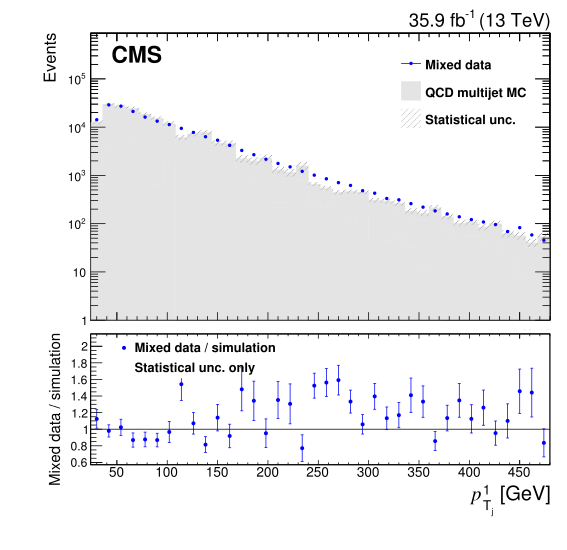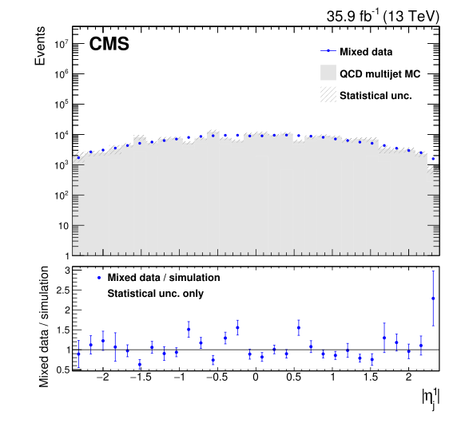
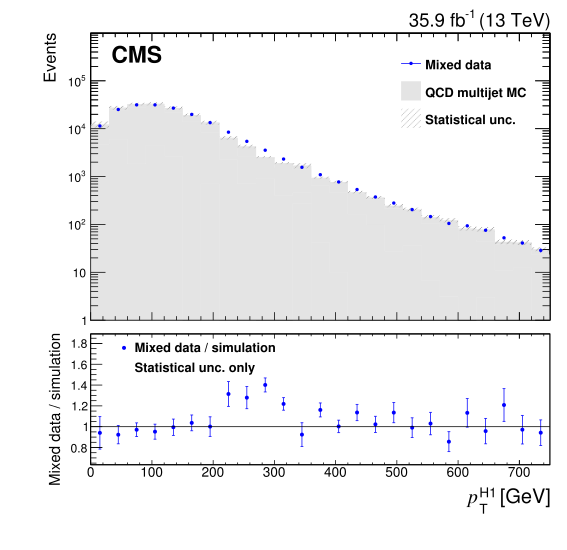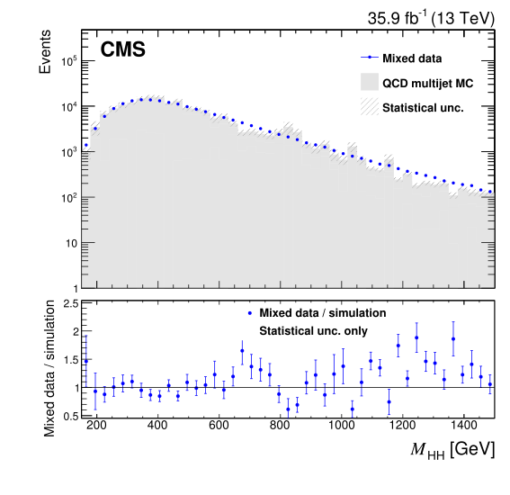
Figure 5.8: Comparison between the background model obtained with the hemisphere mixing technique and the simulated observations from QCD processes for a set of relevant reconstructed variables. A correction factor obtained from the binned classifier distribution, as described in Section 5.6.2, has been applied as a weight to the mixed dataset. Only statistical uncertainties are shown. Figures adapted from [148].. a — first jet transverse momenta \(p_{T_j}^1\), b — first jet pseudo-rapidity \(\eta_{j}^1\), c — Higgs candidate transverse momenta \(p_{T}^{\textrm{H}_1}\), d — Higgs candidate pair system mass \(M_\textrm{HH}\)
5.6.2 Background Validation
One of the drawbacks of using data-driven methods, is that they are often based on a series of implicit assumptions regarding the underlying statistical model of the data, which are difficult to demonstrate directly. Therefore, a more practical approach to verify the validity of a given background model is usually taken, studying its validity in a set of data control region where the component under study dominates and the contribution from the signal is negligible. For the purpose of studying the hemisphere mixing method in this analysis, two data control regions (CRs) are defined:
mass control region (\(M_\textrm{H}\) CR): this dataset is obtained using the same selection described in Section 5.5, but removing all events around the Higgs candidate masses \(90 < M_{\textrm{H}_1} < 150\ \textrm{GeV}\) and \(80 < M_{\textrm{H}_2} < 140\ \textrm{GeV}\). This cut in the reconstructed Higgs masses plane considerably reduces the signal contribution, which is expected to peak around \(M_\textrm{H} = 125\ \textrm{GeV}\).
b-tag control region (b-tag CR): this dataset is obtained using the same selection described in Section 5.5 but b-tagged jets are defined using the loose working point of CMVA, which has a misidentification rate of 10% and a b-tagging efficiency around 85% for jets originating from the Higgs pair decay, while filtering out events with any jet above the medium working point of the CMVA discriminator.
The relative signal contribution in each of these control regions is greatly reduced, e.g the expected \(n_\textrm{S}/n_\textrm{B}\) ratio in the mass (b-tag) control region is only a 16%(17%) of that of those events inside the \(90 < M_{\textrm{H}_1} < 150\ \textrm{GeV}\) and \(80 < M_{\textrm{H}_1} < 140\ \textrm{GeV}\) region. The multi-jet QCD component is still the dominant background in both control regions. While for carrying out the mass control region comparison is enough to apply an additional cut over the selection, the b-tag control region study requires redoing the hemisphere mixing procedure on the new set of event with different b-tag jet selection. For both control regions, all the relevant one-dimensional marginal distributions are found to be in good agreement, as shown for a reduced number of important variables that used as input for the classifier in Figure 5.9 and Figure 5.10.
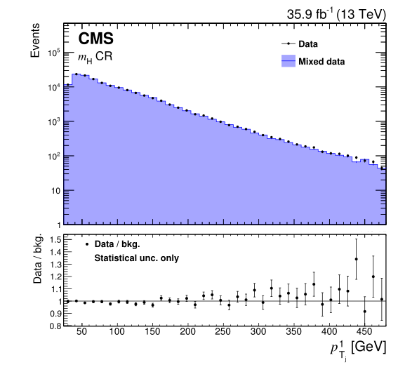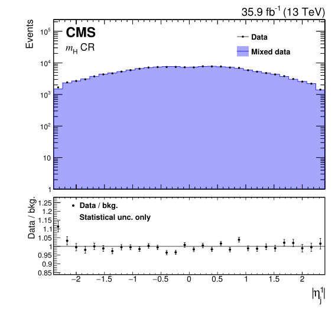
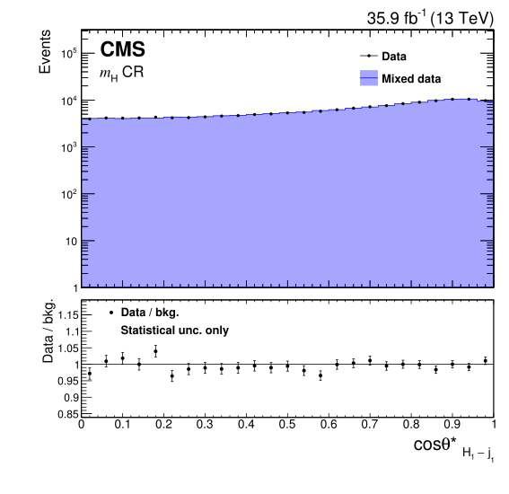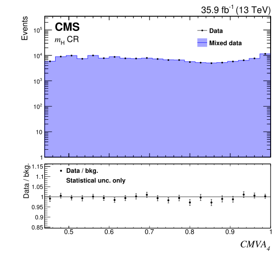
Figure 5.9: Comparison between the background model obtained with the hemisphere mixing technique and the data for the \(M_\textrm{H}\) control region for a set of reconstructed variables used as input of the classifier. A correction factor obtained from the binned classifier distribution, as described in Section 5.6.2, has been applied as a weight to the mixed dataset. Only statistical uncertainties are shown. Figures adapted from [148].. a — first jet transverse momenta \(p_{T_j}^1\), b — first jet pseudo-rapidity \(\eta_{j}^1\), c — first Higgs candidate - first jet \(\cos \theta^{*}_{\textrm{H}_1 - j_1}\), d — lowest CMVA discriminator \(\textrm{CMVA}_4\)
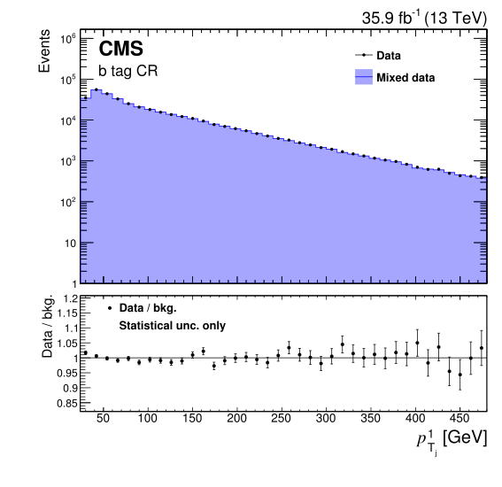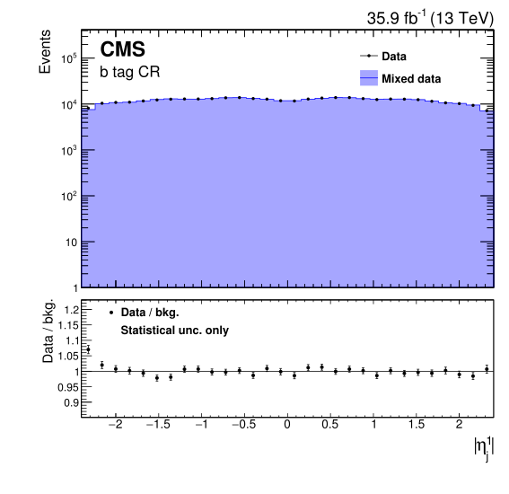
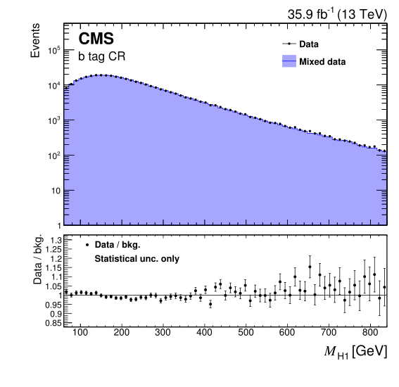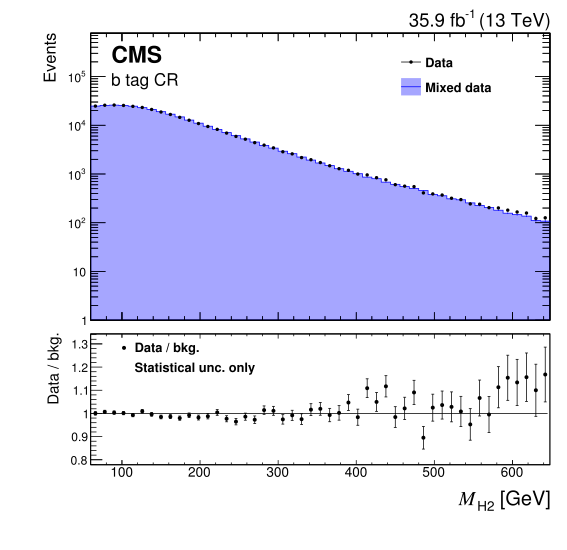
Figure 5.10: Comparison between the background model obtained with the hemisphere mixing technique and the data for the b-tag control region for a set of reconstructed variables used as input of the classifier. A correction factor obtained from the binned classifier distribution, as described in Section 5.6.2, has been applied as a weight to the mixed dataset. Only statistical uncertainties are shown. Figures adapted from [148].. a — first jet transverse momenta \(p_{T_j}^1\), b — first jet pseudo-rapidity \(\eta_{j}^1\), c — first Higgs candidate mass \(M_{\textrm{H}_1}\), d — second Higgs candidate mass \(M_{\textrm{H}_2}\)
While the marginal distributions of each variable are well-modelled, the goal of the technique is rather to obtain an adequate modelling accuracy in the higher dimensional space considered as input of the probabilistic classifier. A way to check the quality of such modelling is to compare the classifier output distribution for the control region data with the background model. This comparison is shown for the \(M_\textrm{H}\) control region in Figure 5.11. The same comparison is not straightforward to carry out for the b-tag control region, because the classifier was trained using the lowest value of the CMVA classifiers, which was lower bounded by the medium working point for the standard selection which instead is upper bounded by same working point in the b-tag CR. While Figure 5.11 shows a reasonable agreement overall, a slight background model excess seems to exist in the lower classifier output range.
![Figure 5.11: Left: Comparison of the BDT classifier output for data in the M_\textrm{H} control region, with the same output computed using an artificial dataset by hemisphere mixing. Right: bin-by-bin differences between the control region data and the hemisphere mixing estimation, divided by their uncertainty, both before (top right) and after the bias correction procedure. The pull distributions and their parameters when fitted by a Gaussian are also shown. The uncertainty after the bias correction has been increased conservatively in order to obtain a unit standard deviation for the residual pull distribution. Figures adapted from [148].](gfx/105_chapter_5/Figure_006.svg)
Figure 5.11: Left: Comparison of the BDT classifier output for data in the \(M_\textrm{H}\) control region, with the same output computed using an artificial dataset by hemisphere mixing. Right: bin-by-bin differences between the control region data and the hemisphere mixing estimation, divided by their uncertainty, both before (top right) and after the bias correction procedure. The pull distributions and their parameters when fitted by a Gaussian are also shown. The uncertainty after the bias correction has been increased conservatively in order to obtain a unit standard deviation for the residual pull distribution. Figures adapted from [148].
The previous mentioned issue has motivated a quantitative study to assess and potentially correct the hemisphere mixing based background model for the classifier output. The bias assessment procedure, schematically depicted in Figure 5.12, starts by constructing a very large artificial sample \(M\) by concatenating all the permutations of the \((k_1,k_2)\) datasets up to a \(k_\textrm{max}=10\), except those used for training the classifier. A total of 200 smaller datasets, referred as replicas \(M_i\), with the same number of events of the original data are obtained by subsampling without replacement \(N\) times from the large mixed dataset \(M\). Each replica dataset is treated in an analogous manner to the original dataset, thus the hemisphere mixing procedure is applied again to create a set of new artificial datasets \(R_i\). The classifier output distribution is obtained for all the new artificial datasets \(R_i\) and compared with the reference distribution of the large sample \(M\), considering a histogram with 80 bins of equal width in the full range of the classifier output \([0.0,1.0]\).
The median difference between the distribution of the classifier output between the large dataset \(M\) and each of the mixed replicas \(R_i\) is shown in Figure 5.13 for the final event selection. A small bias is found in the recovered distribution, which is directly used as a correction to hemisphere mixing technique prediction. Similar results are obtained in the previously mentioned control region. The effect of the correction in the classifier output distribution and pulls in the \(M_\textrm{H}\) control region is also shown in Figure 5.11. The mean of the predicted values minus the observed values are compatible with zero in both control regions, while the root-mean-squared of the pull distribution is not compatible with one in the \(M_\textrm{H}\). In order to conservatively account for the mentioned discrepancy, the variation due to the nuisance parameters added per bin to account for the limited statistics of the artificial background sample is multiplied by a factor \(\alpha=1.9\) so the previous pull distribution root-mean-square becomes one.
![Figure 5.12: Diagram describing the procedure used to estimate the background bias correction. All possible combinations of mixed hemispheres except those used for training are added together to create a large sample N of 96N events from which we repeatedly subsample without replacement 200 replicas M_i of N events. The hemisphere mixing procedure is then carried out again for each of this replicas to produce a set of re-mixed data replicas R_i. The trained multivariate classifier is then evaluated over all the events of M and each R_i and the histograms of the classifier output are compared to obtain the differences for each of the replicas. The median difference is taken as bias correction. Figure adapted from [148].](gfx/105_chapter_5/Figure_011.svg)
Figure 5.12: Diagram describing the procedure used to estimate the background bias correction. All possible combinations of mixed hemispheres except those used for training are added together to create a large sample \(N\) of \(96N\) events from which we repeatedly subsample without replacement 200 replicas \(M_i\) of \(N\) events. The hemisphere mixing procedure is then carried out again for each of this replicas to produce a set of re-mixed data replicas \(R_i\). The trained multivariate classifier is then evaluated over all the events of \(M\) and each \(R_i\) and the histograms of the classifier output are compared to obtain the differences for each of the replicas. The median difference is taken as bias correction. Figure adapted from [148].
![Figure 5.13: Bias estimation obtained by the resampling technique described in the text, in relative units of the statistical uncertainty of the predicted background, used to correct the background estimation. The median (red line) and the upper and lower one s.d. quantiles (green lines) have been computed from 200 subsamples of the re-mixed data comparing the predicted background n^p_b with the observed n^o_b. The variability due to the limited number of subsamples is estimated by bootstrap and it is shown for each estimation using a coloured shadow around the quantile estimation. The light yellow shadow represents the uncertainty due to the limited statistics of the reference observed sample. The separation between the one s.d. quantiles is compatible with the expected variance if the estimation was Poisson or Gaussian distributed. Figure adapted from [148].](gfx/105_chapter_5/Figure_012.svg)
Figure 5.13: Bias estimation obtained by the resampling technique described in the text, in relative units of the statistical uncertainty of the predicted background, used to correct the background estimation. The median (red line) and the upper and lower one s.d. quantiles (green lines) have been computed from 200 subsamples of the re-mixed data comparing the predicted background \(n^p_b\) with the observed \(n^o_b\). The variability due to the limited number of subsamples is estimated by bootstrap and it is shown for each estimation using a coloured shadow around the quantile estimation. The light yellow shadow represents the uncertainty due to the limited statistics of the reference observed sample. The separation between the one s.d. quantiles is compatible with the expected variance if the estimation was Poisson or Gaussian distributed. Figure adapted from [148].